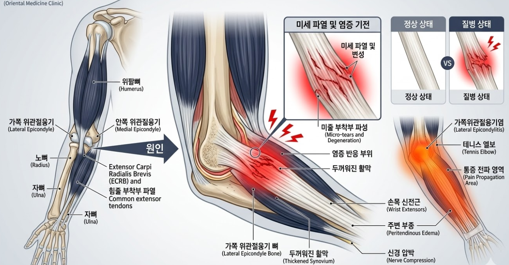

"물건 하나 들기 힘든 팔꿈치 통증, 테니스 엘보 탈출 가이드"
💡 바디올 30초 핵심 요약
1. 테니스 엘보는 팔꿈치 바깥쪽 힘줄에 미세 파열과 만성 염증이 생긴 질환입니다.
2. 어깨가 말리고 등이 굽으면 팔꿈치 힘줄에 더 큰 장력(당기는 힘)이 걸려 잘 낫지 않습니다.
3. 바디올은 도침으로 유착된 힘줄을 박리하고 SART 교정으로 팔의 사슬 구조를 바로잡습니다.
1. 나의 팔꿈치 통증 자가진단
일상에서 다음과 같은 불편함을 겪고 계신다면 팔꿈치 힘줄의 손상이 진행 중일 가능성이 큽니다.
- 장바구니를 들거나 문고리를 돌릴 때 팔꿈치 바깥쪽이 찌릿하다.
- 팔꿈치 바깥쪽의 튀어나온 뼈 부분을 손으로 누르면 매우 아프다.
- 손목을 위로 젖히거나 주먹을 꽉 쥘 때 팔꿈치 주변으로 통증이 번진다.
- 행주를 짜거나 드라이버를 돌리는 비트는 동작이 어렵다.
2. 메커니즘 분석: 왜 자꾸 재발할까요?
팔꿈치 통증은 단순히 팔꿈치만의 문제가 아닙니다. 손목을 많이 쓰는 습관은 물론, 목과 어깨의 정렬 불량이 팔꿈치로 가는 부하를 가속화합니다.

• 만성 유착: 반복된 염증으로 힘줄이 뼈에 딱딱하게 들러붙으면 일반 물리치료로는 혈액이 닿지 않아 재생이 더딥니다.
• 상체 사슬 구조: 굽은 등과 라운드 숄더는 팔꿈치 근육을 미리 팽팽하게 당겨놓은 상태로 만듭니다. 이 상태에서 팔을 쓰면 힘줄이 쉽게 찢어지게 됩니다.
3. 바디올의 통합 치료 솔루션 (Total Care)
바디올한의원은 굳어버린 힘줄을 직접적으로 풀고, 팔꿈치가 편안해질 수 있는 신체 환경을 만듭니다.
• 도침치료(유착박리술): 만성 염증으로 변성되고 유착된 힘줄 조직을 미세 분리하여 조직 재생과 혈액 순환을 촉진합니다.
• 공간척추교정(SART) / 추나요법: 어깨와 흉추의 정렬을 바로잡아 팔꿈치 근육에 가해지는 과도한 장력을 해소합니다.
• 종합 치료 솔루션: 침 치료와 고농도 봉약침으로 힘줄의 심부 염증을 가라앉히며, 부항과 전자뜸으로 전완부 근육을 이완합니다.
• 현대 물리치료: ICT와 TENS 기기를 활용해 팔꿈치 주변 신경 통증을 안정시키고 근육의 회복을 돕습니다.

4. 재발 방지를 위한 바디올 가이드
- 손목 신전근 스트레칭: 아픈 쪽 팔을 앞으로 쭉 펴고, 반대쪽 손으로 손등을 몸쪽으로 부드럽게 눌러 팔꿈치 바깥쪽 근육을 늘려주세요.
- 경추 위생 스트레칭 병행: 팔꿈치 하중을 줄이기 위해 양손을 뒷목에 대고 가슴을 펴며 고개를 뒤로 젖히는 동작을 수시로 반복하여 상체 정렬을 유지하세요.